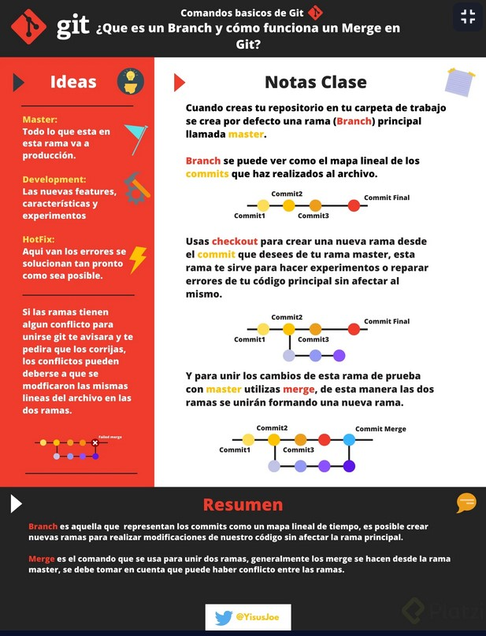
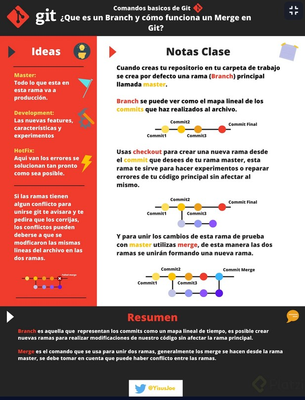
- alias nombrarAlias="instrucción"
- Permite llamar una instrucción escribiendo solo un alias (ejemplo: alias arbolito="git log --all ...").
- git config --global alias.superlog "nombre_del_alias"
- Guarda el alias para evitar que se borre al reiniciar la computadora.
- git init
- Arranca un repositorio.
- q
- salirte de un estado.
- git add
-
- git add ___.txt
- Agrega el archivo o sus cambios al repositorio (en la memoria RAM). se prepara para ingresarse a la base de datos.
- git add .
- Agrega todos los cambios que se hayan hecho a los archivos de la carpeta en donde se esta pocicionado.
- git rm
-
- git rm --cached
- Elimina los archivos del área de Staging y del próximo commit pero los mantiene en nuestro disco duro.
- git rm --cached __.txt
- Elimina el archivo del repositorio antes de que ingrese a la base de datos.
- git rm --force
- Elimina los archivos de Git y del disco duro. Git siempre guarda todo, por lo que podemos acceder al registro de la existencia de los archivos, de modo que podremos recuperarlos si es necesario (pero debemos usar comandos más avanzados).
- git commit
-
- git commit
- Envia los ultimos cambios del archivo a la base de datos del sistema de control de versiones para controlar los cambios que se le hayan hecho. *Cada que se agregan (add) archivos se tiene que enviar los cambios a la base de datos (commit). Si no se le agrega mensaje se abre un VIN donde se coloca el mensaje con CTRL+i y se finaliza el VIN con ESC+SHIFT+Z+Z.
- git commit -m "mensaje"
- La "-m" indica que se le agregará un mensaje para poder verlo en el futuro como una referencia del cambio.
- git commit -am "mensaje"
- Hace un add junto con el commit y el mensaje, solo se debe utilizar con archivos que ya hayan sido ejecutados con un "git add" previamente, es decir, no funciona para archivos recien creados.
- git status
- Muestra el estatus de los cambios hechos, se usa para verificar los cambios.
- git show
-
- git show
- Muestra todos los cambios historicos hechos, cuando y quien hizo los cambios. También muestra a que apunta el HEAD (principalmente solo a 'main')
- git show __.txt
- Muestra los cambios de un archivo especifico.
- git log
-
- git log ___.txt
- Muestra el historial completo del archivo.
- git log --stat
- Muestra los cambios especificos realizados en los archivos apartir del commit.
- git log --all
- Muestra todo lo hecho historicamente.
- git log --all --graph
- Muestra por medio de unas lineas en el margen lateral como han funcionado las ramas.
- git log --all --graph --decorate --oneline
- Muestra toda la historia del proyecto desde que se inicializa
- git config
-
- git config
- Muestra una lista de todas las configuraciones que tiene git y como funcionan.
- git config --list
- Muestra la configuracion por defecto del git y las que le faltan.
- git config --list --show-origin
- Muestra las configuraciones guardadas.
- git config --global user.name "NAME"
- Modifica la configuracion de los usuarios globales de git colocando un nombre.
- git config --global user.email "E-MAIL"
- Lo mismo pero coloca un e-mal.
- git diff
-
- git diff
- Muestra los cambios entre los cambios guardados en la memoria RAM y los guardados en el disco duro.
- git diff id-commit1 id-commit2
- compara dos versiones guardadas de un archivo.
- git reset
-
- git reset --soft
- Borramos todo el historial y los registros de Git pero guardamos los cambios que tengamos en Staging, así podemos aplicar las últimas actualizaciones a un nuevo commit.
- git reset id-commit --soft
- Se posiciona en la version especificada y elimina las versiones posteriores a esa del repositorio.
- git reset --hard
- Borra todo. Todo todito, absolutamente todo. Toda la información de los commits y del área de staging, se borra el historial.
- git reset id-commit --hard
- Restaura los documentos a la version especificada del repositorio y elimina las versiones posteriores de git y del disco duro.
- git reset HEAD
- Este es el comando para sacar archivos del área de Staging. No para borrarlos ni nada de eso, solo para que los últimos cambios de estos archivos no se envíen al último commit, a menos que cambiemos de opinión y los incluyamos de nuevo en staging con git add, por supuesto.
- git clone URL_del_servidor_remoto
- Nos permite descargar los archivos de la última versión de la rama principal y todo el historial de cambios en la carpeta .git.
- git push
- Luego de hacer git add y git commit debemos ejecutar este comando para mandar los cambios al servidor remoto.
- git fetch
- Lo usamos para traer actualizaciones del servidor remoto y guardarlas en nuestro repositorio local (se ejecuta antes del git push).
- git merge nombre_de_la_rama
- Usamos este comando con servidores remotos. Lo necesitamos para combinar los últimos cambios del servidor remoto y nuestro directorio de trabajo. Se debe posicionar en la rama a la que se le quieren fusionar los cambios (generalmente se posiciona en la rama principal, o sea main) y en el comando se coloca el nombre de la rama que se le quiere combinar.
- git pull
- Basicamente, git fetch y git merge al mismo tiempo.
- git branch
-
- git branch
- Muestra todas las ramas existentes en el proyecto de git.
- git branch o git branch -l
- Muestra una lista de todas las ramas que existen.
- git branch nombre_de_la_rama
- Crea una rama del proyecto con el nombre especificado. Esta rama contendrá una copia del último commit.
- git branch -d nombre_de_la_rama
- Elimina la rama especificada (con '-d' se fuerza el borrado).
- git branch -m nombreRamaVieja nombreRamaNueva
- Renombra una rama colocando el nombre de la rama actual y el nombre por el que se desea cambiarla.
- git show-branch
- Muestra las ramas que existen y cuál ha sido su historia dentro del proyecto.
- git show-branch --all
- Muestra un poco de más información.
- gitk
- Muestra de una forma visual toda la historia del proyecto.
- git checkout
-
(Se deben guardar los cambios correspondientes en el repositorio actual antes de cambiar de version del commit o de rama).
- git checkout id-commit archivo.txt
- Nos devuelve el archivo especificado a la version de commit especificada. Si se hace un commit en este estado se borrara todo lo creado despues de esta version.
- git checkout main archivo.txt
- nos devuelve la ultima version del archivo especificado.
- git checkout nombre_de_la_rama
- Nos mueve a la rama especificada.
- git checkout -b nombre_de_la_rama
- Crea una nueva rama con el nombre especificado y nos posiciona en ella.
- git remote
-
- git remote
- Muestra el tipo de repositorio que tenemos disponibles.
- git remote -v
- Muestra el tipo de repositorio disponible, su URL y las acciones que se pueden hacer con él como usar fetch (importar proyectos) o push (exportar proyectos).
- git remote add origin URL_(HTTPS_o_SSH)
- Agrega un orígen remoto de nuestros archivos.
- git pull
-
- git pull origin main
- Importa a nuestro "origin" los cambios de la rama "main" (repositorio en GitHub).
- git pull origin main --allow-unrelated-histories
- Permite fusionar la rama (o branch) remota con la rama (o branch) local (generalmente se usa este comando la primera vez que se hace pull).
- git pull rama_local main
- Importa a una rama local el contenido que hay en la rama "main".
- git push origin main
- Exporta o envía nuestro "origin" la rama "main" de GitHub.
- cd ~
- La "~" (alt+126) nos dirige al home
- ssh-keygen -t rsa -b 4096 -C "correo@mail.com"
-
Se coloca éste código desde home (~).
Lo que hace es que genera una llave de SSH para una mayor seguridad en el proyecto.
Con "-t" se especifica el algoritmo que se utilizará para crear la llave que en este caso es rsa.
Con "-b" se especifica que tan compleja es la llave.
Con "4096" se indica la complejidad de la llave desde una perspectiva matemática.
Con "-C" se indica a que correo electrónico va a estar conectada la llave y el cual debe ser el correo que tenemos en nuestro repositorio de GitHub.
Después de ingresar el código se da enter si es que la dirección de almacenamiento sugerido es deseada o sino se puede escribir una dirección deseada.
Se puede ingresar una contraseña con espacios llamada "passphrase" para mayor seguridad. - eval $(ssh-agent -s)
- Verifica que el servidor de llaves esta activo: "Agent" indica que el servidor de SSH esta activo, "pid" es el id del proceso y el número al final indica que el proceso esta activo.
- ssh-add ~/.ssh/id_rsa
-
En home por default se encuentra la carpeta ".ssh" (como empieza por punto se supone que es una carpeta oculta), en donde se encuentran las llaves publicas y privadas.
El comando agregará la llave al sistema, debe contener la ruta de la llave privada. - git tag
-
- git tag
- Muestra los tags que existen en el proyecto.
- git tag -a nombre_del_tag -m "mensaje descriptivo del tag" hash
-
"-a" indica que se agregará un tag.
Generalmente se le coloca un nombre como v0.1 (versión 0.1 del proyecto). - git show-ref --tag
- Muestra a que hash o a que commit esta conectado un tag.
- git pull origin main
- Como buena practica, antes de subir a la web un tag, se obtiene el repositorio de GitHub.
- git push origin --tags
- Le envia a origin los tags creados.
- git tag -d nombre_del_tag
- Elimina un tag del proyecto en git (no de GitHub).
- git push origin :refs/tags/nombre_del_tag
- Elimina el tag de GitHub que esta conectado con el tag eliminado dentro del proyecto en git (puede que previamente se tenga que usar pull y push para subir la referencia del tag eliminado en el proyecto de git).
Como los tags no son archivos no se envian con un simple push.
Si tu rama principal no es "main" y es "master" o algún otro nombre, se debe modificar para que sea "main".
Como cambiar nombre a la rama principal
*Los archivos binarios no se deben agregar al repositorio debido a que lo hacen más pesado.
*Se crea una llave SSH por cada computadora.
*La llave privada nunca se comparte.
Una vez que se tiene la llave se debe agregar al entorno (indicarle al sistema operativo que la llave existe).
Después de haber creando nuestro entorno local, nos conectamos con GitHub y se remplaza la conexión HTTPS por una conexión SSH para hacer git pull y git push sin usar contraseñas y seguir manteniendo una conexión segura.
Los tags o etiquetas nos permiten asignar versiones a los commits con cambios más importantes o significativos de nuestro proyecto. Son útiles en el sitio web de GitHub porque es la forma en que otros usuarios pueden visualizar que verciones ocurrieron y rara vez son útiles dentro del proyecto ya que solo se usrían para dejar un registro interno.
Subir un proyecto a GitHub.
Se crea un repositorio en GitHub:
Posicionado en la carpeta del computador en donde se tiene el proyecto que se subirá al repositorio creado se usa el comando git remote add origin URL copiado para crear un "origin" con el que se descarga el repositorio y se suben cambios o aportes desde nuestro computador. Con git remote -v se puede comprobar que se hizo todo correctamente, aparecerá un texto que indica el origin, la URL y entre parentesis "fetch" y "push".
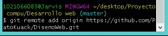Si la rama principal se llama "master" se le cambia el nombre a la rama principal ya que desde 2020 se dejó de utilizar "master" para convertirse en "main" con el comando git checkout master para dirigirse a la rama master, después se escribe el comando git branch -m main
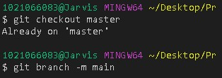Se indica que las ramas principales sean main para futuros proyectos con el comando git config --global init.defaultBranch main
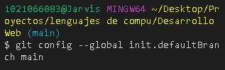Se envia al origen, la rama main con el comando git push origin main. Si se queda pasmada la terminal de git permitiendo solo ingresar texto, entonces se presiona CONTROL + c para detener el proceso, después se abre otra terminal como en CMD o preferentemente una terminal de "visual studio code" y se vuelve a escribir este comando.
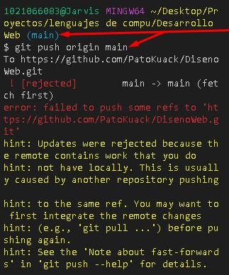Se integran los cambios remotos antes de hacer un push, para esto se importa el repositorio desde el origen, la rama main con el comando git pull origin main
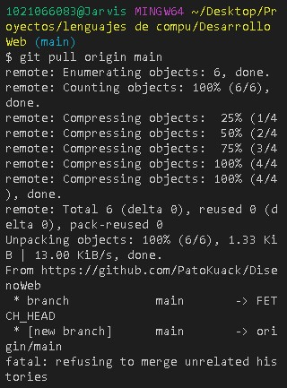Se fucionan las historias no relacionadas, es decir, la rama local y la rama de GitHub con el comando git pull origin main --allow-unrelated-histories, esto generalmente solo se usa con el primer pull a un repositorio.
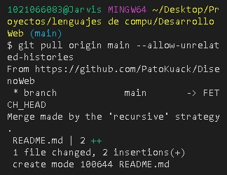Se sube el proyecto con todos sus commits con el comando git push origin main
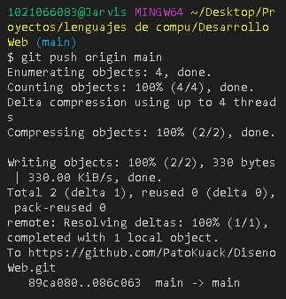Se recarga la página de GitHub y se podrá visualizar los archivos y su información como sus comits o fecha de ultima modificación.
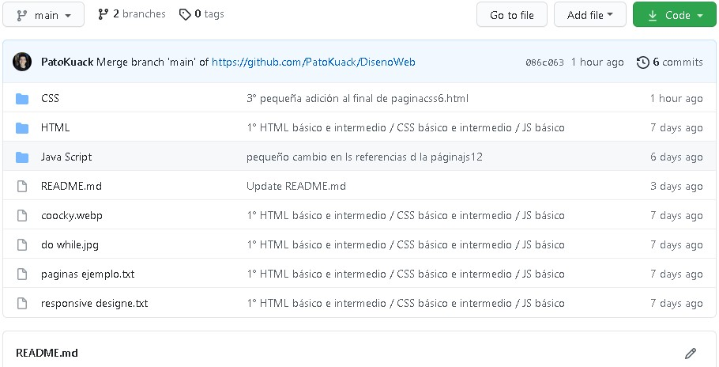Cambiar la conexión HTTP por SSH.
Después de crear la llave SSH con los comandos indicados se procede a lo siguiente:
Uso de ramas.
- git checkout main
- Se deben crear las ramas desde la versión más resiente qu debería ser la rama main.
- git branch rama's_name
- Se crea la rama.
- git branch
- Se verifica que se hayan creado las ramas.
- git push origin rama's_name
- git pull origin nombre_de_la_rama
- Importamos la rama creada a nuestro repositorio del proyecto local.
- git checkout nombre_de_la_rama
- Nos colocamos en la rama creada para trabajar en ella.
- git commit -am "mensaje_introductorio_del_commit"
- Una vez modificada la rama se agregan y guardan los cambios.
- git pull origin nombre_de_la_rama
- Se importa el repositorio por si hay cambios de otros usuarios.
- git push origin nombre_de_la_rama
- Se suben los cambios hechos a la rama.
- git checkout main
- Se dirige a la rama principal que es a la que se le adicionarán las aportaciones de las otras ramas.
- git merge nombre_de_la_rama_secundaria
- Se le agregan las aportaciones de alguna rama secundaria a la rama principal.
- git pull origin main
- Verifica que no hayan cambios externos que eviten hacer el push.
- git push origin main
- Se sube a GitHub los cambios en el repositorio.
Cuando se trabaja con un compañero en el proyecto, el creador del proyecto en GitHub le tiene que dar acceso al proyecto para que el compañero pueda subir sus aportaciones de código o para clonar el proyecto en caso de que sea privado.
Al darle acceso a un usuario para que modifique o aporte en nuestro proyecto, nos brindarán un link para compartirlo con el usuario colaborador e invitarlo al proyecto, una vez que acepte la invitación podrá iniciar a hacer aportaciones a nuestro proyecto.
Generalmente es el lider del proyecto, product manager o el CTO el que se encarga de unir las ramas cuando ya el trabajo esta completado por lo que debe hacer pull con la rama que desea unir, después verifica que el código este correcto y...
Pull request
<<<<<<< HEAD En un entorno profesional normalmente se bloquea la rama main, y para enviar código a dicha rama pasa por un "code review", ya que se realizan pruebas enviamos el código a servidores que normalmente los llamamos "staging develop" (servidores de pruebas) luego de que se realizan las pruebas pertinentes tanto de código como de la aplicación, estos pasan a el servidor de producción con un "pull request" (también llamado "merge request" o "push request") que une los códigos. Todo esto generalmente lo hace el líder de proyecto o el DevOps (administrador del entorno de desarrollo).
Al pull request se le pueden agregar detalles:
El título del pull request es el nombre del commit.
Se le puede colocar una descripción o un mensaje para quien lo revise.
En reviewers se le pueden agregar usuarios que lo reviser.
En assignees se le asigna a un usuario.
En labels se le pueden agregar etiquetas.
En project se agrupan repositorios dentro de GitHub.
En milestone se indica que se cumplió un objetivo que se tenía y que el pull request lo represeta.
Por último se presiona el botón "Crear pull request" para ejecutarlo y que las personas solicitadas revisen el pull request.
El pull request describe las acciones del código y el usuario correspondiente se encarga de revisar el código y pedir cambios o ejecutar el merge.
Desde la pestaña "Files changed" se pueden agregar comentarios, aprobar el merge o pedir cambios al proyecto.
<<<<<<< HEAD =======Colaboración.
Un colaborador es un usuario que sugiere aportaciones al proyecto sin ser parte del equipo de trabajo del proyecto.
Para ser un colaborador de algún proyecto se necesita:
- Activar Watch
- Con esta función podremos recibir notificaciones en el momento en que haya conversaciones del proyecto.
- Star
- Indica que un proyecto nos gusta y nos permite recibir notificaciones si hay cambios en el proyecto.
- Fork
- Toma una copia del estado actual del proyecto y lo clona como un proyecto propio si es que el proyecto es público.
Se clona el proyecto al disco duro con la opción code, y depende si se implementaron la llave SSH o solo la HTTPS en tu computadora se selecciona la opción respectiva.
En la terminal de la computadora personal se posiciona en el directorio en el que se desea almacenar el proyecto que se clonó en GitHub con el comando cd y seguido a eso se usa el comando "git clone URL_copiada" para copiar el proyecto al disco duro en el directorio especificado.
Si se hacen cambios y contribuciones al proyecto clonado se puede crear un pull request y nos conecta directamente con el proyecto original. Se puede pedir que se agreguen las contribuciones si es que no hay conflictos con el repositorio original, después se puede esperar, agregar comentarios al pull request o cerrar (eliminar) el pull request.
Si el dueño o líder del proyecto acepta el pull request le hará un merge.
Fork
Para mantener actualizado el proyecto se crea una rama especial
- git remote add upstream URL_(HTTPS_o_SSH)
- Con este comando se crea una nueva rama, generalmente se usa el nombre "upstream" en la rama que se utiliza como un remoto para importar datos de un proyecto que es ajeno y así poder fusionarlo a la rama principal de nuestro proyecto importado.
- El URL que se utiliza es el del proyecto ajeno que queremos clonar contantemente para mantener actualizados sus cambios.
- git pull upstream main
- Importa a "upstream" el contenido que hay en la rama "main".
- git commit -am "mensaje"
- Hace un commit a upstream.
- git push origin main
- Hace un push con los cambios.
La rama "upstream" es un apuntador que apunta hacia el repositorio de GitHub original, cada que el proyecto original hace cambios, éste se actualizará con el pull y luego enviará los cambios a nuestro main local.
GitIgnore
Se crea un archivo nuevo y se guarda en la raíz de la rama del proyecto con el nombre de .gitignore
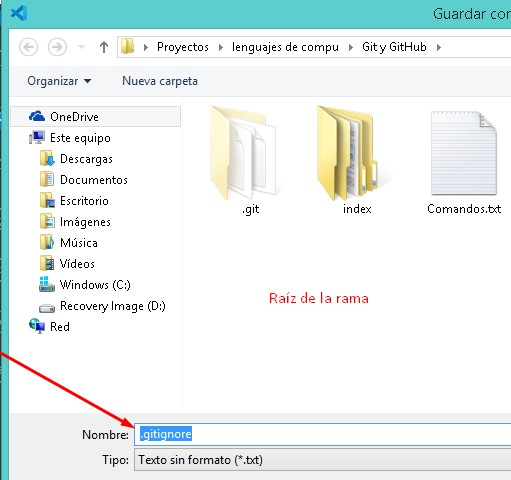En este documento se colocarán los tipos de archivo que se gnorarán al hacer push. Como es mala practica agregar archivos binarios a un repositorio, se agregarán las instrucciones correspondientes para que se ignoren los archivos que sean imagenes o videos.
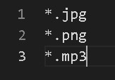La sintaxis de este archivo incluye:
- #Texto
- Con los "#" se colocan comentarios.
- /content/tmp/*
- Ignorará todo el contenido de la carpeta "tmp" que esta dentro de la carpeta "content" de la raíz del proyecto.
- /apps/imagenes/**/*
- Ignorará tod el contenido de todas las carpetas que estén en el directorio especificado.
- !/content/**/README.md
- El simbolo "!" es una excepción. Si se elimina algún archivo de cualquier carpeta que esté dentro de la carpeta content, no se eliminarán los "README.md".
README.md
Es una excelente práctica en los proyectos, md significa Markdown, que es una especie de código que te permite cambiar la manera en que se ve un archivo de texto.
Lo interesante de Markdown es que funciona en muchas páginas, por ejemplo la edición en Wikipedia; es un lenguaje intermedio que no es HTML, no es texto plano, es una manera de crear excelentes texto formateados, pero puede interpretar código html y texto plano o texto de marcado como el uso de hash (#text) para marcar títulos o subtítulos (##text, ###text) dentro del contenido.
Se puede aprender mucho de los proyectos opensource, ejemplo: vuejs/vue
Se puede editar el archivo README.md abriendolo directamente o mediante un editor online como MEditor.md
GitHub-Pages
GitHub tiene un servicio de hosting gratis llamado GitHub Pages, tu puedes tener un repositorio donde el contenido del repositorio se vaya a GitHub y se vea online.
Paso 1:
Crear un repositorio público con el nombre del usuario agregandole ".github.io" (si ya tienes un repositorio con tu nombre de usuario solo cambiale el nombre dirigiendote a la pestaña Settings).
Paso 2:
Se copia el URL del repositorio dependiendo si se tiene configurada la llave SSH o no y desde la terminal git se clona el repositorio (se debe posicionarse en la carpeta donde se desea clonarlo) con el comando git clone URL.
Paso 3:
Se crea un achivo "index.html" dentro de la carpeta del proyecto con el nombre de usuario que se crea al clonar el repositorio y desde la terminal git se hace un add y commit para agregarlo a GitHub.
Paso 4:
Se configura el repositorio para que sea el que carga GitHub Pages entrando a la pestaña Settings y se selecciona la sección Pages en la que se verifica que se este usando la rama deseada que se visualizará en la página, generalmente es la rama main.
Tip:
Se tienen que cargar los archivos en el repositorio que se quieran usar en la página como los archivos binarios.
Paso Extra:
Si se desea hacer los mismos pasos con un repositorio con otro nombre, se tiene que agreagar el origen de la página en el link, ejemplo:
Al link que nos crea GitHub Pages: https://patokuack.github.io/DisenoWeb/ se le adiciona la carpeta o archivo en donde se encuentra el documento a visualizar HTML: HTML/Paginas/indexhtml.html